library(RCPA3)Making Comparisons
Agenda:
- Install Packages and Libraries
- Base R
table()Function - Crosstabs Using
crosstabC()Function - Cleaning Up Messy Crosstabs
- Adding Complexity to the Crosstabs
- Comparing Continuous/Interval DVs
- Boxplots with Interval/Continuous DVs Across Categorical IVs
- Scatterplots with Interval/Continuous DVs and IVs
- Advanced Material
1. Install Packages and Libraries:
No new packages to install!
Load libraries!
2. Base R table() Function
Base R is what R comes with a fresh install, meaning it has no extra packages. The table() function in base R creates a table from a variable or set of variables, so it can help us get a quick sense of the distribution of observations across categories.
We can look at variables individually….
table(states$abortlaws.3cat)
Few restrictions Moderate restrictions Many restrictions
11 20 19 table(states$religiosity3)
Low Mid High
17 17 16 …or view at them together to see how the categories of one variable align with the categories on another one. In other words, we’re looking at how many cases fit in each box of the table to understand how the two variables are related (if at all).
table(states$abortlaws.3cat, states$religiosity3)
Low Mid High
Few restrictions 10 1 0
Moderate restrictions 7 9 4
Many restrictions 0 7 12But what about our column percentages???
3. Crosstabs Using crosstabC() Function
The table() function is pretty basic, so this is where crosstabC() comes in…
We’ll start with an initial crosstab between states$abortlaws.3cat as the DV outcome and states$religiosity3 as the IV:
crosstabC(states$abortlaws.3cat, states$religiosity3)===========================================================================
Cross-Tabulation Analysis
===========================================================================
Table: Cross-Tabulation of states$abortlaws.3cat and states$religiosity3
Low Mid High Totals
------------------------ ------- ------- ------- -------
% Few restrictions 58.82 5.88 0.00 22.00
__Count___ 10.00 1.00 0.00 11.00
% Moderate restrictions 41.18 52.94 25.00 40.00
__Count___ 7.00 9.00 4.00 20.00
% Many restrictions 0.00 41.18 75.00 38.00
__Count___ 0.00 7.00 12.00 19.00
% Totals 100.00 100.00 100.00 100.00
__Count___ 17.00 17.00 16.00 50.00Note: You did not identify which response value you want to plot.Therefore, crosstabC will plot the first response value: "Few restrictions"To plot another response value, use this function's plot.response argument.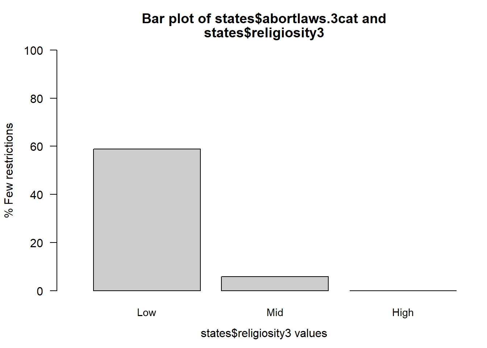
This minimal code works, but how does R know which one is the DV and which one is the IV? The default order of the arguments matters. The DV always comes first, then the IV. But sometimes it’s better to be explicit instead of remembering the correct order of the arguments. So, let’s do that, just in case we tweak the code later…
crosstabC(dv = abortlaws.3cat, iv = religiosity3, data = states)===========================================================================
Cross-Tabulation Analysis
===========================================================================
Table: Cross-Tabulation of abortlaws.3cat and religiosity3
Low Mid High Totals
------------------------ ------- ------- ------- -------
% Few restrictions 58.82 5.88 0.00 22.00
__Count___ 10.00 1.00 0.00 11.00
% Moderate restrictions 41.18 52.94 25.00 40.00
__Count___ 7.00 9.00 4.00 20.00
% Many restrictions 0.00 41.18 75.00 38.00
__Count___ 0.00 7.00 12.00 19.00
% Totals 100.00 100.00 100.00 100.00
__Count___ 17.00 17.00 16.00 50.00Note: You did not identify which response value you want to plot.Therefore, crosstabC will plot the first response value: "Few restrictions"To plot another response value, use this function's plot.response argument.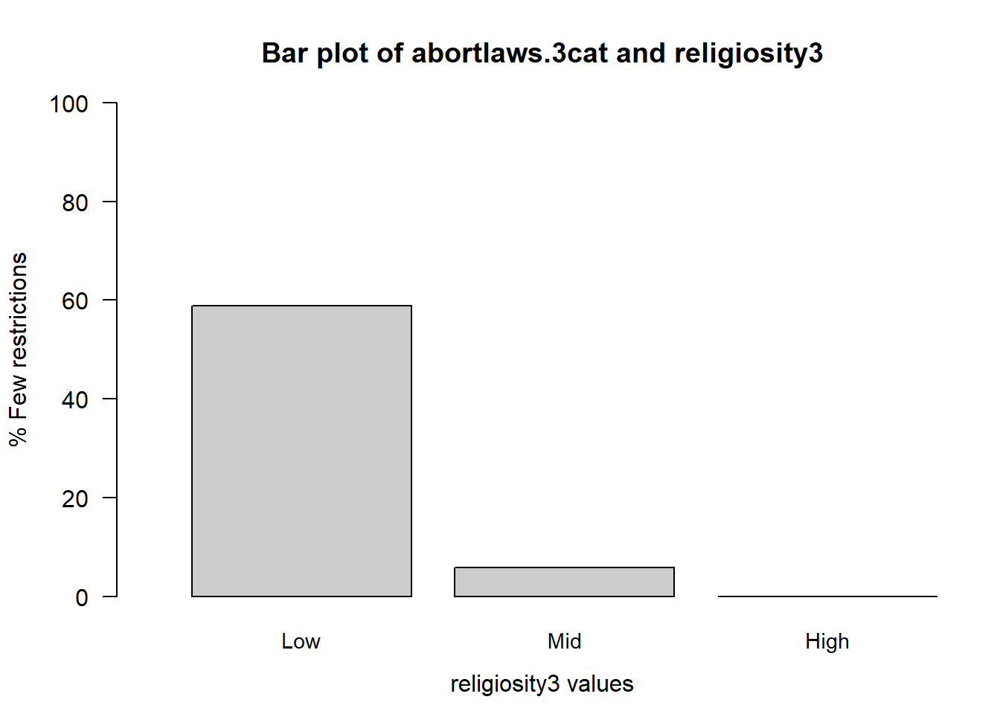
The function also defaults to visualizing the lowest category of the DV (“Few restrictions”, in this case) but we can also tell it which category we want to see in the plot, too. Just have to add another optional argument: plot.response =.
We can swap between any of the categories of the DV:
crosstabC(dv = states$abortlaws.3cat, iv = states$religiosity3, plot.response = "Few restrictions")===========================================================================
Cross-Tabulation Analysis
===========================================================================
Table: Cross-Tabulation of states$abortlaws.3cat and states$religiosity3
Low Mid High Totals
------------------------ ------- ------- ------- -------
% Few restrictions 58.82 5.88 0.00 22.00
__Count___ 10.00 1.00 0.00 11.00
% Moderate restrictions 41.18 52.94 25.00 40.00
__Count___ 7.00 9.00 4.00 20.00
% Many restrictions 0.00 41.18 75.00 38.00
__Count___ 0.00 7.00 12.00 19.00
% Totals 100.00 100.00 100.00 100.00
__Count___ 17.00 17.00 16.00 50.00
crosstabC(dv = states$abortlaws.3cat, iv = states$religiosity3, plot.response = "Moderate restrictions")===========================================================================
Cross-Tabulation Analysis
===========================================================================
Table: Cross-Tabulation of states$abortlaws.3cat and states$religiosity3
Low Mid High Totals
------------------------ ------- ------- ------- -------
% Few restrictions 58.82 5.88 0.00 22.00
__Count___ 10.00 1.00 0.00 11.00
% Moderate restrictions 41.18 52.94 25.00 40.00
__Count___ 7.00 9.00 4.00 20.00
% Many restrictions 0.00 41.18 75.00 38.00
__Count___ 0.00 7.00 12.00 19.00
% Totals 100.00 100.00 100.00 100.00
__Count___ 17.00 17.00 16.00 50.00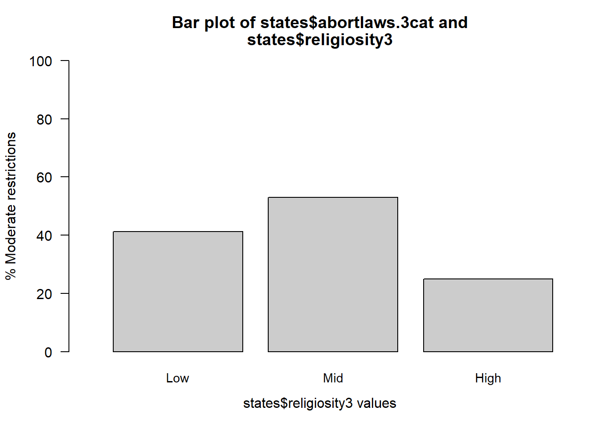
crosstabC(dv = states$abortlaws.3cat, iv = states$religiosity3, plot.response = "Many restrictions")===========================================================================
Cross-Tabulation Analysis
===========================================================================
Table: Cross-Tabulation of states$abortlaws.3cat and states$religiosity3
Low Mid High Totals
------------------------ ------- ------- ------- -------
% Few restrictions 58.82 5.88 0.00 22.00
__Count___ 10.00 1.00 0.00 11.00
% Moderate restrictions 41.18 52.94 25.00 40.00
__Count___ 7.00 9.00 4.00 20.00
% Many restrictions 0.00 41.18 75.00 38.00
__Count___ 0.00 7.00 12.00 19.00
% Totals 100.00 100.00 100.00 100.00
__Count___ 17.00 17.00 16.00 50.00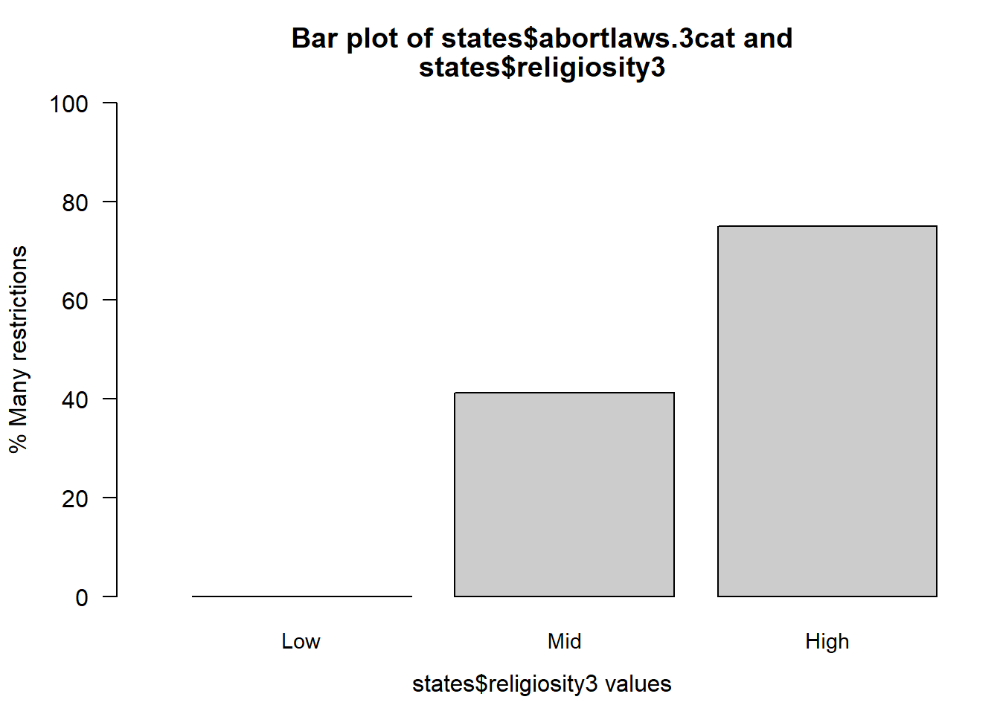
If we want to, we can also switch up the chart type with another optional argument! For example, we could also switch from a bar chart to a line graph with the plot = option.
crosstabC(dv = states$abortlaws.3cat, iv = states$religiosity3, plot.response = "Many restrictions", plot = "line")===========================================================================
Cross-Tabulation Analysis
===========================================================================
Table: Cross-Tabulation of states$abortlaws.3cat and states$religiosity3
Low Mid High Totals
------------------------ ------- ------- ------- -------
% Few restrictions 58.82 5.88 0.00 22.00
__Count___ 10.00 1.00 0.00 11.00
% Moderate restrictions 41.18 52.94 25.00 40.00
__Count___ 7.00 9.00 4.00 20.00
% Many restrictions 0.00 41.18 75.00 38.00
__Count___ 0.00 7.00 12.00 19.00
% Totals 100.00 100.00 100.00 100.00
__Count___ 17.00 17.00 16.00 50.00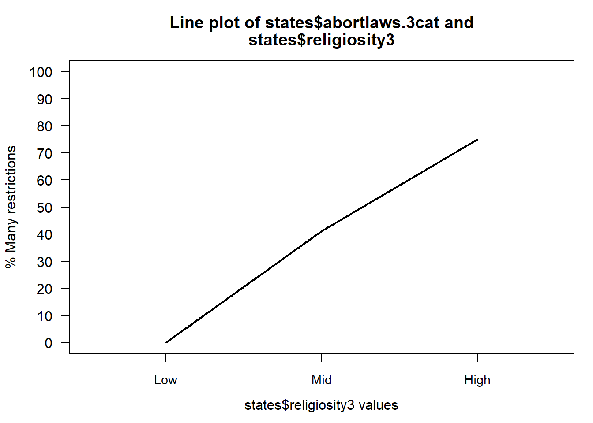
The line graph doesn’t make much sense with a categorical IV (because a line is continuous and these categories are discrete…), but now we know we’ve got the option if we’re working with different variables later.
4. Cleaning Up Messy Crosstabs
Is a respondent’s education level related to their ideology?
crosstabC(dv = nes$libcon3, iv = nes$educ.5cat) #is education level related to ideology?===========================================================================
Cross-Tabulation Analysis
===========================================================================
Table: Cross-Tabulation of nes$libcon3 and nes$educ.5cat
1. Less than high school credential 2. High school credential 3. Some post-high school, no bachelor's degree 4. Bachelor's degree 5. Graduate degree Totals
------------------ ------------------------------------ -------------------------- ----------------------------------------------- --------------------- ------------------- --------
% 1. Liberal 13.93 12.89 16.84 25.13 35.08 22.45
__Count___ 34.00 125.00 391.00 477.00 535.00 1562.00
% 2. Moderate 61.48 54.02 52.24 49.53 44.66 50.41
__Count___ 150.00 524.00 1213.00 940.00 681.00 3508.00
% 3. Conservative 24.59 33.09 30.92 25.34 20.26 27.14
__Count___ 60.00 321.00 718.00 481.00 309.00 1889.00
% Totals 100.00 100.00 100.00 100.00 100.00 100.00
__Count___ 244.00 970.00 2322.00 1898.00 1525.00 6959.00Note: You did not identify which response value you want to plot.Therefore, crosstabC will plot the first response value: "1. Liberal"To plot another response value, use this function's plot.response argument.Adjusting plot configuration to fit labels. Consider modifying column labels with ivlabs argument.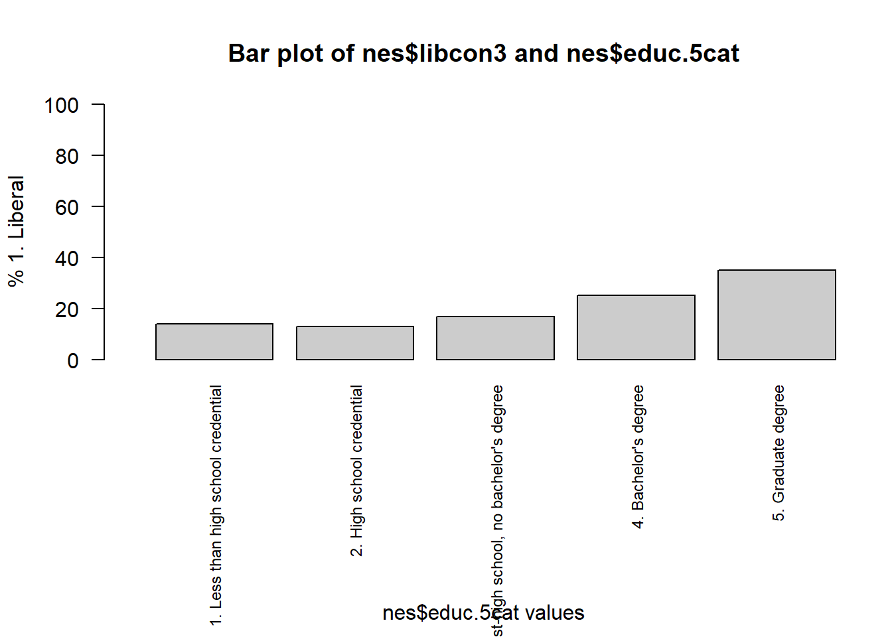
Oof. Multiple long value labels are a nightmare; they make both the table and the chart difficult to read.
But the function includes optional argument to change the labels! The dvlabs = c() is for categories of the DV and ivlabs = c() is for the categories of the IV.
Because we’re more interested in column percentages than the raw counts, too, we also include the compact = T argument to make the output clearer.
Try the code below (it spans multiple lines just to help delineate each option):
crosstabC(dv = nes$libcon3, iv = nes$educ.5cat,
dvlabs = c("Lib", "Mod", "Con"),
ivlabs = c("<HS", "HS", "SomeBA", "BA", ">BA"),
plot = "bar",
plot.response = "Lib",
compact=T
)===========================================================================
Cross-Tabulation Analysis
===========================================================================
Table: Cross-Tabulation of nes$libcon3 and nes$educ.5cat
<HS HS SomeBA BA >BA Totals
------ ------- ------- -------- -------- -------- --------
% Lib 13.93 12.89 16.84 25.13 35.08 22.45
% Mod 61.48 54.02 52.24 49.53 44.66 50.41
% Con 24.59 33.09 30.92 25.34 20.26 27.14
Count 244.00 970.00 2322.00 1898.00 1525.00 6959.00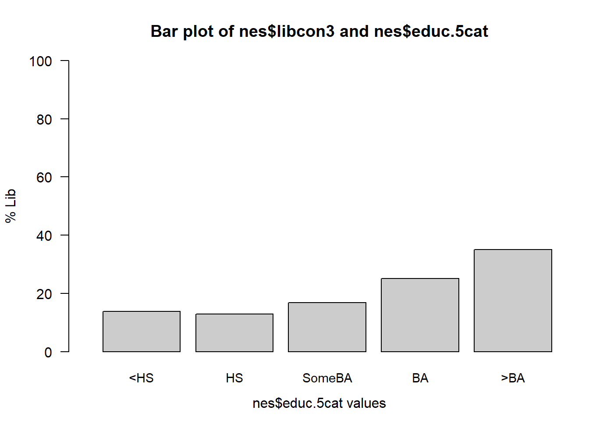
5. Adding Complexity to the Crosstabs
Instead of specifying only “Lib” as the response category of the DV that we want to show, we have the option to do all of the categories at once in a clustered bar chart: plot.response = "all".
crosstabC(dv = nes$libcon3, iv = nes$educ.5cat,
dvlabs = c("Lib", "Mod", "Con"),
ivlabs = c("<HS", "HS", "SomeBA", "BA", ">BA"),
plot = "bar",
plot.response = "all", # all the DV categories
compact=T
)===========================================================================
Cross-Tabulation Analysis
===========================================================================
Table: Cross-Tabulation of nes$libcon3 and nes$educ.5cat
<HS HS SomeBA BA >BA Totals
------ ------- ------- -------- -------- -------- --------
% Lib 13.93 12.89 16.84 25.13 35.08 22.45
% Mod 61.48 54.02 52.24 49.53 44.66 50.41
% Con 24.59 33.09 30.92 25.34 20.26 27.14
Count 244.00 970.00 2322.00 1898.00 1525.00 6959.00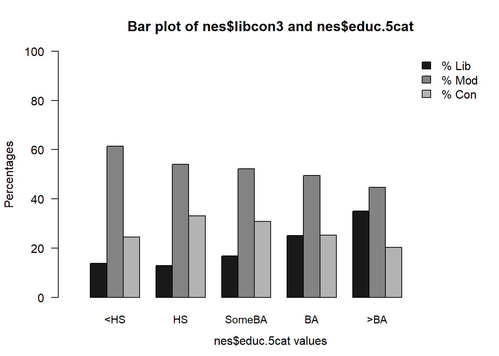
By changing plot.response from a specific category (e.g., “Lib”) to “all”, we get the clustered bar chart! Plus, we can still adjust the chart type with the plot = option is we need a stacked line graph or a mosaic plot.
crosstabC(dv = nes$libcon3, iv = nes$educ.5cat,
dvlabs = c("Lib", "Mod", "Con"),
ivlabs = c("<HS", "HS", "SomeBA", "BA", ">BA"),
plot = "line", # line graph or mosaic plot
plot.response = "all",
compact=T
)===========================================================================
Cross-Tabulation Analysis
===========================================================================
Table: Cross-Tabulation of nes$libcon3 and nes$educ.5cat
<HS HS SomeBA BA >BA Totals
------ ------- ------- -------- -------- -------- --------
% Lib 13.93 12.89 16.84 25.13 35.08 22.45
% Mod 61.48 54.02 52.24 49.53 44.66 50.41
% Con 24.59 33.09 30.92 25.34 20.26 27.14
Count 244.00 970.00 2322.00 1898.00 1525.00 6959.00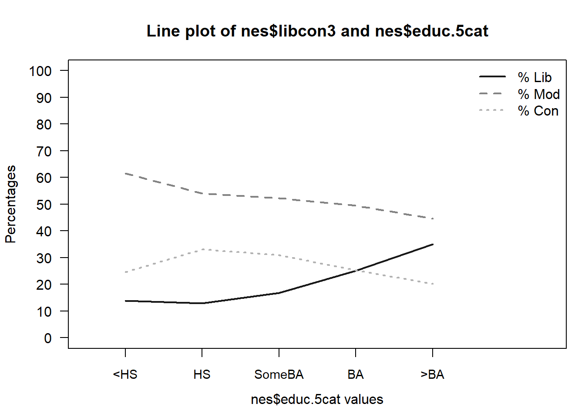
But mosaic plots and stacked bar charts are goofy in general, so don’t bother.
6. Comparing Continuous/Interval DVs
Comparing the mean of a continuous/interval DV across different categories of a categorical IV is often useful. Here’s one from the Pollock textbook:
compmeansC(dv=legalclimate, iv=judge.selection, data=states)===========================================================================
Mean Comparison Analysis
===========================================================================
Table: Mean Values of legalclimate by judge.selection
Mean N St. Dev.
------------------------- ------ --- ---------
Appointed by commission 66.81 21 5.12
Appointed by governor 63.14 5 8.55
Appointed by legislature 63.85 2 6.29
Non-partisan election 62.02 15 5.96
Partisan election 56.13 7 7.91
Total 63.39 50 6.96One or more text labels for bars is long. Consider abbreviating with ivlabs argument.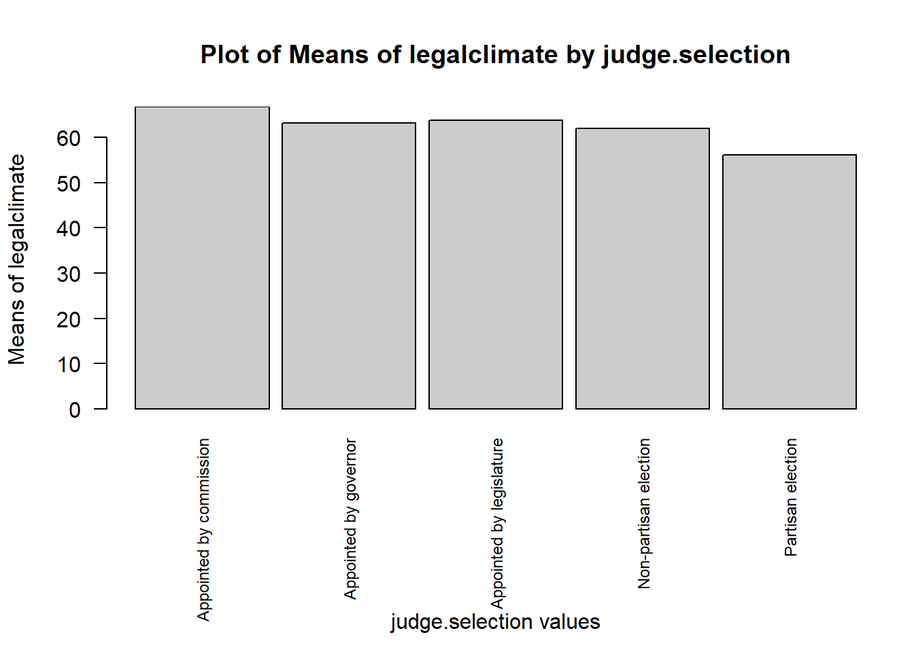
Oh. Well, we could use the ivlabs = c() option again in this function. But let’s just try to compare the mean GDP per capita across different regime types. Polity score is a pretty common measure of the level of democracy in a country:
compmeansC(dv=world$gdp.percap, iv=world$polity.score, plot = "line")Error in compmeansC(dv = world$gdp.percap, iv = world$polity.score, plot = "line"): There's a problem: world$polity.score is numeric variable. Collapse values to fit a mean comparison table.WTF? Turns out polity.score is technically ordinal, but it’s “too numeric” because it has a lot of categories (-10 to +10). Since the numbers don’t have labels and it’s just seen as an interval variable, R is confused about how to treat it discretely/categorically.
Let’s try a more clearly categorical measure of democracy like vdem.4cat instead:
compmeansC(dv=world$gdp.percap, iv=world$vdem.4cat, plot = "line")===========================================================================
Mean Comparison Analysis
===========================================================================
Table: Mean Values of world$gdp.percap by world$vdem.4cat
Mean N St. Dev.
----------------------- --------- ---- ---------
1. Liberal democracy 47782.35 31 20101.71
2. Electoral democracy 15899.29 55 11302.07
3. Electoral autocracy 10179.81 59 14088.63
4. Closed autocracy 19711.39 23 23902.22
Total 20295.74 168 20997.71One or more text labels for bars is long. Consider abbreviating with ivlabs argument.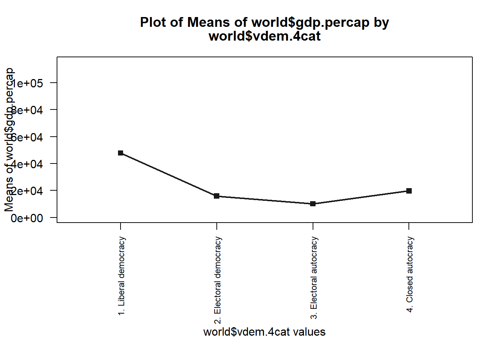
Success! Sort of…
We still have a graph problem. Time to re-label!
compmeansC(dv=world$gdp.percap,
iv=world$vdem.4cat,
plot = "line",
ivlabs = c("LibDem", "Dem-ish", "Autoc-ish", "FullAutoc")
)===========================================================================
Mean Comparison Analysis
===========================================================================
Table: Mean Values of world$gdp.percap by world$vdem.4cat
Mean N St. Dev.
---------- --------- ---- ---------
LibDem 47782.35 31 20101.71
Dem-ish 15899.29 55 11302.07
Autoc-ish 10179.81 59 14088.63
FullAutoc 19711.39 23 23902.22
Total 20295.74 168 20997.71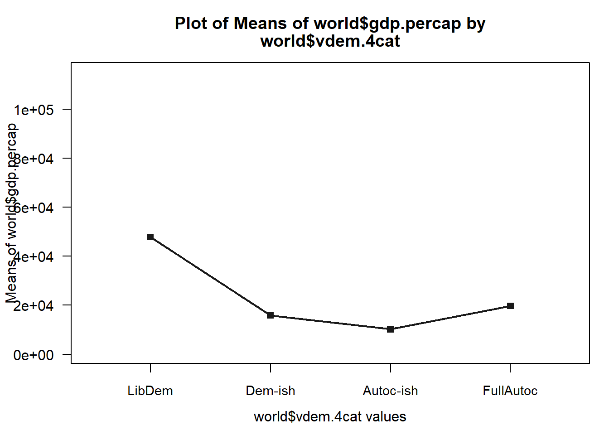
The labels are definitely easier to read, but the scientific notation on the y-axis is confusing. So, let’s do a quick transformation of the DV (world$gdp.percap) to change the scale first, then use our new variable instead.
gdppc.thou <- world$gdp.percap/1000 #GDP per capita in thousands of dollars
compmeansC(dv=gdppc.thou,
iv=world$vdem.4cat,
plot = "line",
ivlabs = c("LibDem", "Dem-ish", "Autoc-ish", "FullAutoc")
)===========================================================================
Mean Comparison Analysis
===========================================================================
Table: Mean Values of gdppc.thou by world$vdem.4cat
Mean N St. Dev.
---------- ------ ---- ---------
LibDem 47.78 31 20.10
Dem-ish 15.90 55 11.30
Autoc-ish 10.18 59 14.09
FullAutoc 19.71 23 23.90
Total 20.30 168 21.00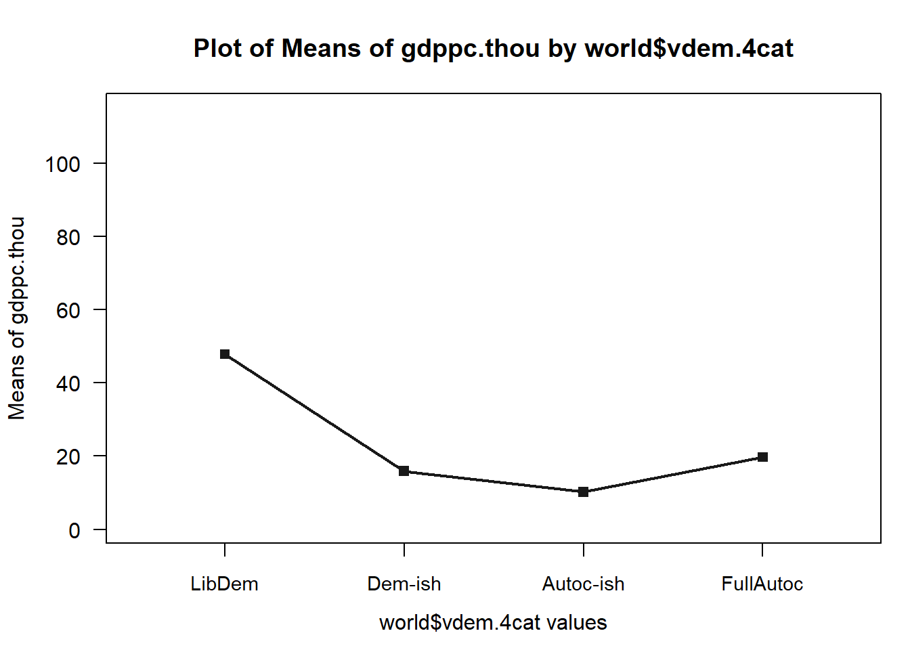
Slay. Or whatever.
Now, let’s add confidence intervals (plot.ci = T) to the code, so we can see if there is a significant difference between the means of gdppc.thou across regime types,
compmeansC(dv=gdppc.thou,
iv=world$vdem.4cat,
plot = "line",
plot.ci=T,
ivlabs = c("LibDem", "Dem-ish", "Autoc-ish", "FullAutoc")
)===========================================================================
Mean Comparison Analysis
===========================================================================
Table: Mean Values of gdppc.thou by world$vdem.4cat
Mean N St. Dev.
---------- ------ ---- ---------
LibDem 47.78 31 20.10
Dem-ish 15.90 55 11.30
Autoc-ish 10.18 59 14.09
FullAutoc 19.71 23 23.90
Total 20.30 168 21.00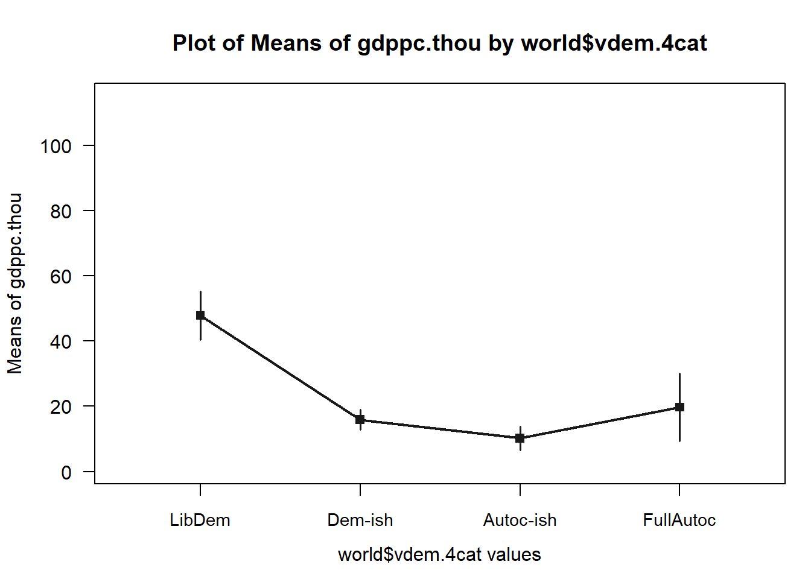
Understanding Confidence Interval bars:
- If the CI bars touch/overlap: Not significant.
- If they don’t: Significant.
In our case, there is a significant difference in the mean of gdppc.thou for “LibDem” countries relative to “Dem-ish” and “Autoc-ish” countries. But there’s some overlap comparing the other regime types.
7. Boxplots with Interval/Continuous DVs Across Categorical IVs
We already know that the mean is affected by skewness, so we should check the distribution of gdppc.thou to make sure that things aren’t too wonky…
We can do that with a boxplot:
boxplotC(dv=gdppc.thou,
iv=world$vdem.4cat,
ivlabs = c("LibDem", "Dem-ish", "Autoc-ish", "FullAutoc")
)================================================================================
Making Comparisons with Box Plots
================================================================================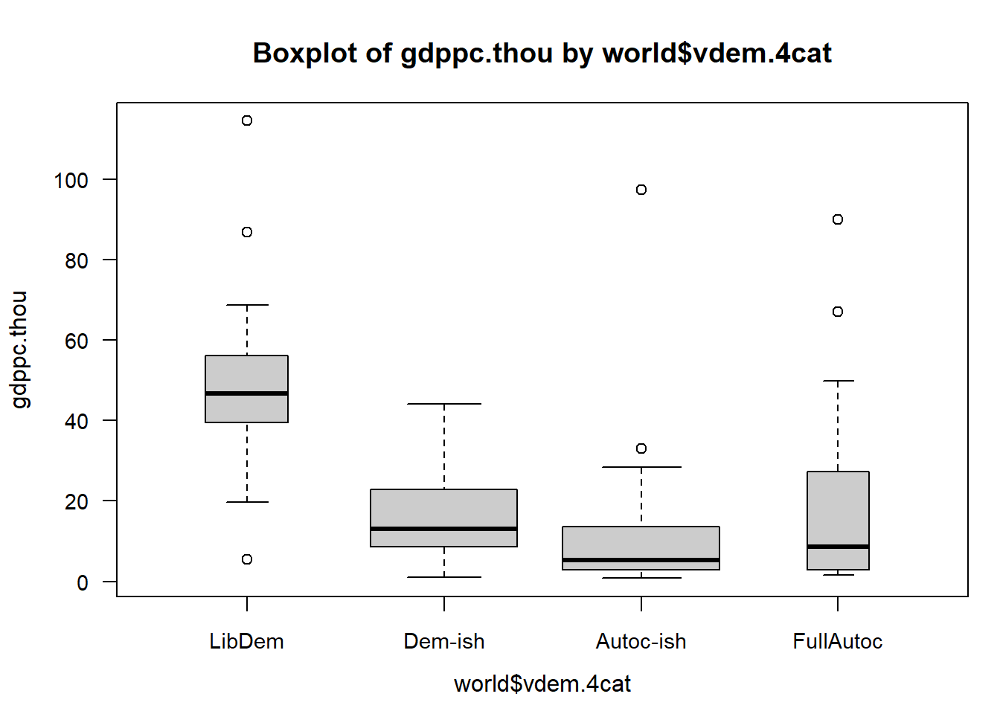
Here’s how to read a boxplot:
- dots: outliers
- top line: maximum, excluding outliers
- bottom line: minimum, excluding outliers
- top of the box: third quartile (75% of data under this line)
- bold line: median
- bottom of the box: first quartile (25% of data under this line)
8. Scatterplots with Interval/Continuous DVs and IVs
When we have continuous/interval variables in both the IV and the DV, we can do a quick scatterplot.
But the plot() function expects the IV (x =) first by default, which throws me off because I’m used to the DV coming first in the code! So, that’s another reason to get in the habit of specifying which is which in the code itself.
plot(y=world$gdp.percap, x=world$pop.urban)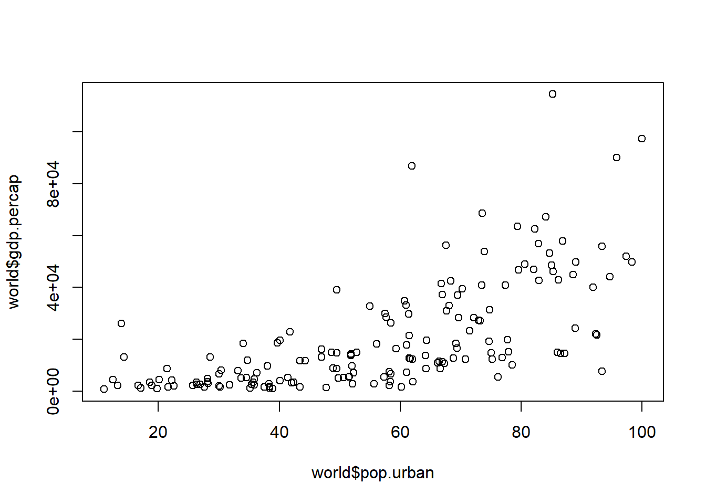
Yikes, this is a messy scatterplot.
Maybe a transformation would lessen the skew?
histC(world$gdp.percap) #check the histogram. Big-ass positive skew!===========================================================================
Describing Distribution of Values with Frequency Table and Histogram
===========================================================================
Table: Distribution of Binned Values of world$gdp.percap (Gross domestic product per capita (in U.S. dollars))
Interval Frequency Percent Cum. Percent
------------------ ---------- -------- -------------
[0 - 10000] 70 41.42 41.42
(10000 - 20000] 42 24.85 66.27
(20000 - 30000] 16 9.47 75.74
(30000 - 40000] 10 5.92 81.66
(40000 - 50000] 16 9.47 91.13
(50000 - 60000] 7 4.14 95.27
(60000 - 70000] 4 2.37 97.64
(70000 - 80000] 0 0.00 97.64
(80000 - 90000] 1 0.59 98.23
(90000 - 1e+05] 2 1.18 99.41
(1e+05 - 110000] 0 0.00 99.41
(110000 - 120000] 1 0.59 100.00
Total 169 100.00 NA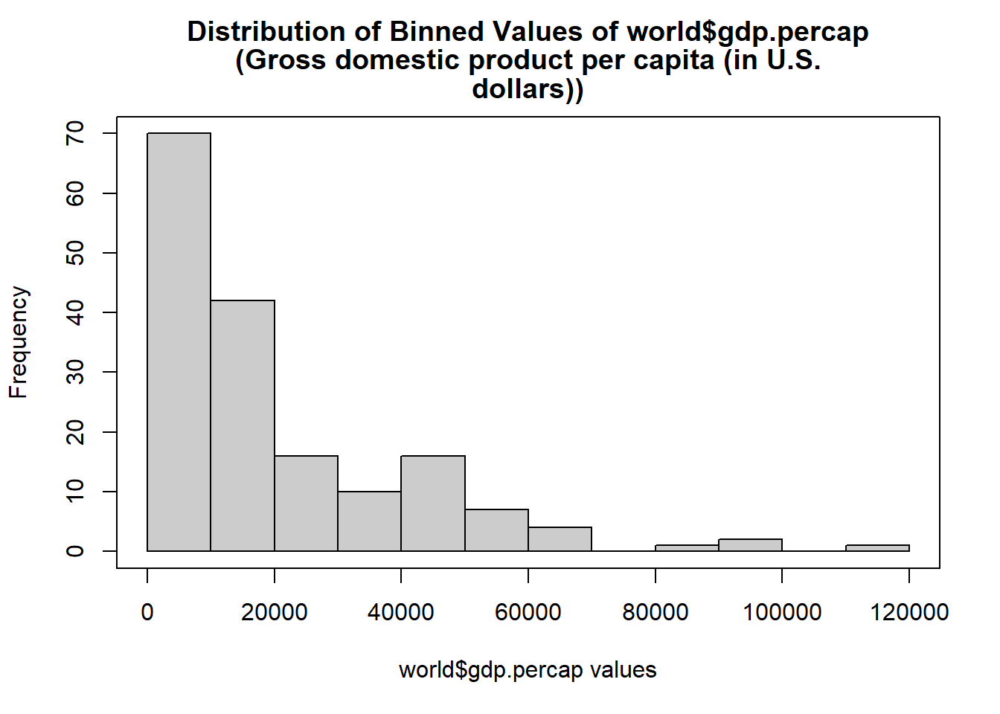
histC(world$pop.urban) # check the histogram. Normal enough===========================================================================
Describing Distribution of Values with Frequency Table and Histogram
===========================================================================
Table: Distribution of Binned Values of world$pop.urban (Percentage of the population living in urban areas)
Interval Frequency Percent Cum. Percent
----------- ---------- -------- -------------
[10 - 20] 10 5.99 5.99
(20 - 30] 16 9.58 15.57
(30 - 40] 21 12.57 28.14
(40 - 50] 18 10.78 38.92
(50 - 60] 22 13.17 52.09
(60 - 70] 31 18.56 70.65
(70 - 80] 21 12.57 83.22
(80 - 90] 18 10.78 94.00
(90 - 100] 10 5.99 99.99
Total 167 100.00 NA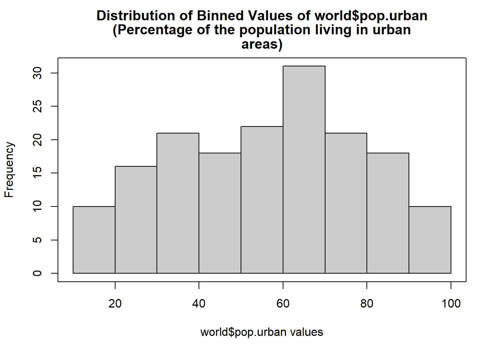
Transforming the skewed gdp.percap variable using its natural log reduces the skew and clarifies the pattern in the scatterplot.
plot(y=log10(world$gdp.percap), x=world$pop.urban)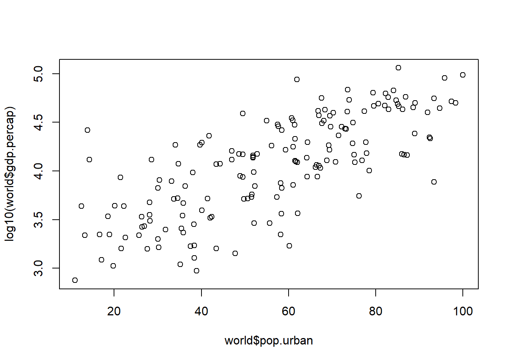
Now, let’s make the chart clear to the consumers of our visualization by adding titles (main =) and axis labels (xlab = and ylab =)…
plot(y=log10(world$gdp.percap), x=world$pop.urban,
main = "Scatterplot of Urban Pop and Wealth",
xlab = "%Urban Population",
ylab = "Per Capita GDP (natural log)"
)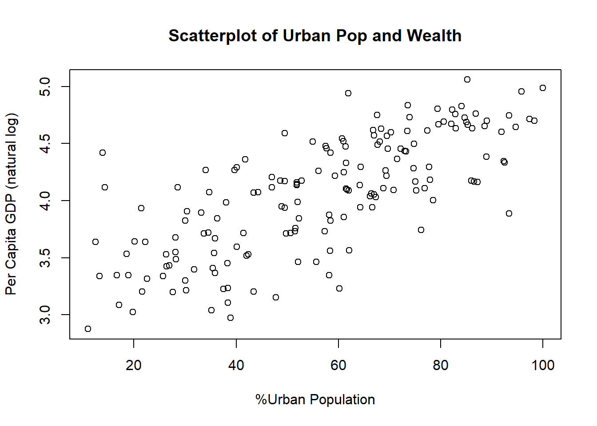